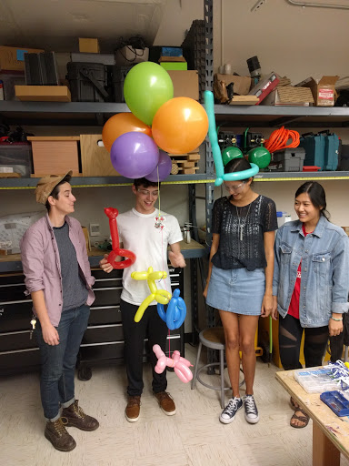

Making and Connecting
Making as a movement is almost entirely founded on the idea of connecting with others and the community. These projects that we create not only empower us as educators and learners, but also work directly with our environment to help others and make real changes. This is why forming tight-knit communities can only benefit individual makers who are looking for ideas to flesh out, problems to solve, and other makers to help. In many cities, this can be seen through the establishment of Makerspaces, where makers can come together to learn new skills and work on their projects in the company of like-minded individuals. I have never felt more welcomed into a community than this one! Makers are friendly and always willing to answer questions and talk about the projects, making it very easy to feel at home and comfortable, which is very important for students (and teachers!) who are trying something new for the first time.
Apart from joining with other individuals, Maker Education connects with the community in another very profound way. Making reacts to needs of the community and helps students learn to solve concrete problems that affect them in their day-to-day lives. My Maker philosophy is very closely tied to my overall teaching philosophy; as a teacher, I allow my students to learn in a way that empowers them to find agency in their education, along with using this agency through the lens of social justice. The writings of Paulo Freire in his book Pedagogy of the Oppressed describe how education can be tailored to specific communities, and it can be as simple as wording a math problem to deal with a local problem, or as complicated as designing a full-scale project that centers around the community and the inequalities that can arise in these communities. Making can be directly related to solving these problems, such as designing a water-cleaning solution for local water supplies as one example, and I try to use maker education as a way to help students use their education in a powerful way.
My Maker Community
 From the very start of my
involvement in the Maker community, I've been in contact with makers in Austin, as well as the amazing online
community that helps me create things like this website, my Arduino projects, and much more! Perhaps my
biggest involvement in the community has to be my UTeach Maker Cohort, shown to the right at my first formal
maker event, SXSW Create! My cohort has been responsible for planning many maker events where I have been
exposed to new ideas and the amazing creativity of the Maker movement.
From the very start of my
involvement in the Maker community, I've been in contact with makers in Austin, as well as the amazing online
community that helps me create things like this website, my Arduino projects, and much more! Perhaps my
biggest involvement in the community has to be my UTeach Maker Cohort, shown to the right at my first formal
maker event, SXSW Create! My cohort has been responsible for planning many maker events where I have been
exposed to new ideas and the amazing creativity of the Maker movement.
SXSW Create has some amazing things to show off, much like Austin's Maker Faire in May of 2017. This was another event I attending as part of my Uteach Maker cohort and I had the great opportunity of working with kids using circuit blocks also made by our cohort. These circuit blocks worked somewhat like Snap circuits in that they had individual pieces that were linked together with wires that would cause them to function, such as hooking up a buzzer to a battery and having it go off once the circuit was completed. This experience with making as a community really showed the learning aspect of working with others. Kids interested in making stopped by our booth and played with circuits while learning something interesting. It showed this community does more than work to create something together, but it also allows a network of learning to be created when a novice works with a more experienced maker.
Attending maker events like these really shaped my path as a Maker. I was able to see the excitement and the progress that many makers have made throughout their journeys, which was exciting because I love to see the passion people bring to their projects. Seeing these events and participating in the community really led me to consider my maker projects more deeply and allowed me to experience Making in a tangible sense. I think it's important for new makers to attend these events to become inspired and to feel involved with like-minded individuals.
My Maker cohort also explores different activities and engineering challenges in monthly meetings. Recently, we worked to create dirigibles that we could pilot across a room. These blimps were made of just balloons and motorized propellers, but the activity really resonated with me as what the Maker movement is all about. Not only was it interdisciplinary (from engineering, physics, and math), but it was a lot of fun and allowed different people to contribute different things to the final product. My group incorporated an artisitic element by involving balloon animals, which provided weight to keep the dirigible buoyantly neutral. Before being involved in UTeach Maker, I would have never thought to add something that, to me, seemed unimportant or useless. However, these community meetings have showed me that taking ownership of a creation is as important as completing the final goal of the creation itself. Plus, it can make the activity much more fun!
Online Maker Communities
Of course, Making doesn't always have to be an in-person thing. For someone like me who prefers to work on the computer side of making, online communities play an extremely important role in my learning. GitHub, for example, is where I happen to host my website through their free server service. I also get a lot of help from people who have GitHub accounts! In addition, instructables helped me create a lot of aspects of my projects, such as the Arduino project that led to the chemical Rube Goldberg I talked about in my Maker Education section. Making is a worldwide phenomenon, and even those that don't identify with the label can offer great help to those learning through just a simple google search.
Working as a Maker Fellow
After my graduation form the UTeach program, I continued to attend Maker meetings as professional development and personal fulfillment. In doing so, I also volunteered as a Maker Fellow, a mentor figure to students currently pursuing their Maker credential as pre-service teachers. As I’ve said, the community in which we find ourselves is one of the vital features of all Makers, and I found that acting as a mentor was just one way to give back to my community.